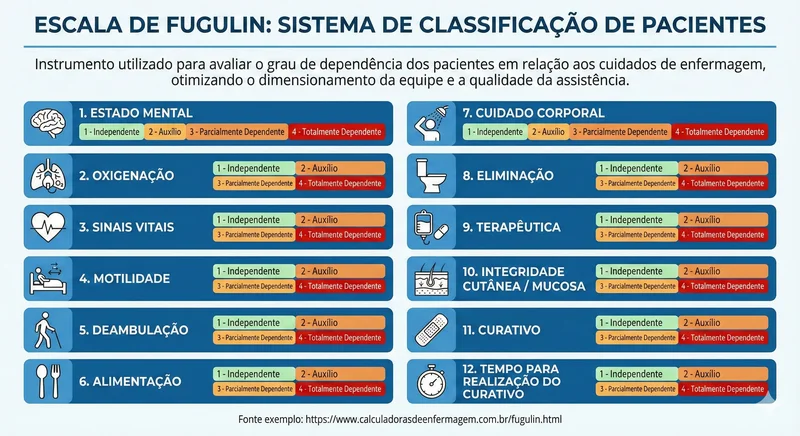

Escala de Fugulin
Classificação do Grau de Complexidade do Paciente
Ano de criação: 1994
Autores: Prof. Dra. Fernanda Maria Togeiro Fugulin (e colaboradores), da Escola de enfermagem da Universidade de São Paulo (USP).
Área empregada: Unidades de hospitalização e UTI.
Criterios avaliados: Estado mental, oxigenação, sinais vitais, motilidade, deambulação, alimentação, cuidado corporal, eliminação, terapêutica, tempo de troca de curativo, curativo e integridade cutâneo-mucosa/compromisso tissular.
Quem utiliza?: Enfermeiros.

CONSELHO FEDERAL DE ENFERMAGEM. Aplicabilidade da Escala de Fugulin na Sistematização da Assistência de Enfermagem. In: **Congresso Brasileiro dos Conselhos de Enfermagem – CBCENF**, 20., 2017. Anais [...]. Disponível em: https://inscricoes-cbcenf.cofen.org.br/anais/20/24190/trabalhoresumo. Acesso em: 1 jul. 2025.
Comentários
Dúvidas ou sugestões? Escreva abaixo.